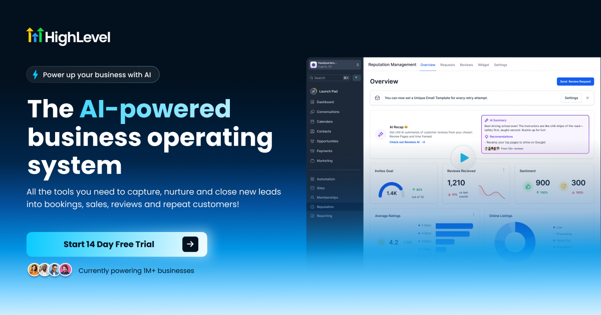

Ask most small business owners what’s holding back growth and they’ll say “I need more leads.” Then look at their inbox, their phone, and their DMs. There are usually leads sitting there already: people who asked for a quote, called after hours, or filled out a form and never heard back.
That’s not a lead problem. It’s a follow-up problem. It’s also the cheapest revenue problem you’ll ever fix, because the people are already interested. You just have to get back to them.
If you’ve wondered why your business isn’t generating leads, start here. More often than not, the leads came in and slipped away.
The 5 Reasons Follow-Up Breaks Down
1. It depends on you remembering
When follow-up lives in your head, it happens only when you have a free minute. Small business owners rarely do. The job site, the client meeting, and the invoice all come first. The lead from Tuesday becomes the lead you forgot about by Friday.
2. Leads are scattered everywhere
One lead texts you. Another fills out your website form. A third leaves a voicemail, and a fourth DMs your Facebook page. With no single place to see them all, some never get a reply, not even a first one.
3. You stop after one or two attempts
Most owners send one message, maybe a second, and then assume the prospect isn’t interested. In reality, people are busy. They meant to reply and didn’t. The businesses that win are the ones still politely showing up on the fourth, fifth, and sixth touch.
4. Missed calls never get a callback
A missed call is often the warmest lead you’ll get, because that person wanted to talk to you right now. If nobody answers and nobody calls back quickly, they call the next business on the list. We broke down what that costs in how missed calls drain small business revenue.
5. There’s no pipeline, so nothing looks urgent
Without a simple pipeline (New → Contacted → Quoted → Won/Lost), you can’t see which deals are stalling. When nothing looks urgent, nothing gets chased.
What Broken Follow-Up Actually Costs You
You don’t need industry statistics to see the cost. Run this quick math on your own business:
- Count the leads that came in over the last 90 days (calls, forms, texts, DMs).
- Count how many got no reply, or only one.
- Multiply that number by your close rate.
- Multiply the result by your average job or sale value.
That’s revenue you already paid to attract and then left on the table. For most service businesses, it’s the biggest line item they never see.
The $0 Fix: A Follow-Up System That Runs Without You
The fix isn’t hiring an assistant or working later. It’s putting three simple things in place, and you can do all of it on a free trial before paying anything.
Step 1: Put every lead in one inbox
Connect your website forms, phone number, SMS, email, and social messages to one place. When every lead lands in the same inbox, nothing slips through because it came in on the “wrong” channel.
Step 2: Turn on missed-call text-back
When you miss a call, the system sends an automatic text within seconds: “Sorry we missed you! How can we help?” The caller gets an immediate response, the conversation starts by text, and you pick it up when you’re free.
Step 3: Build one 5-touch follow-up sequence
You don’t need a complex funnel. One sequence covers most businesses:
- Day 0: Instant text + email: “Got your request, here’s what happens next.”
- Day 1: Text check-in with a quick question about their project.
- Day 3: Email with a short testimonial or before/after.
- Day 7: Text: “Still interested? Happy to answer any questions.”
- Day 14: Final email: “Closing out your file. Reply anytime if timing changes.”
Once a lead replies, the sequence stops automatically and it becomes a real conversation. For a deeper walkthrough of how these pieces fit together, see our guide to building a CRM follow-up system that stops losing leads.

Set Up Your Follow-Up System on a Free Trial
GoHighLevel puts your CRM, SMS, email, missed-call text-back, pipeline, and booking calendar in one platform. Build your follow-up sequence during the free trial and see it work before you pay.
Start Your GoHighLevel Free Trial →What If You Can’t Answer the Phone at All?
Some businesses (contractors on a roof, stylists mid-appointment, solo operators) can’t pick up during the day, period. A text-back helps, but some callers want to talk to someone.
That’s where an AI phone answering service fits. Upfirst answers every call 24/7, captures the caller’s details and what they need, and sends you a summary, so the lead is logged and waiting for your follow-up system instead of lost to voicemail.

Never Send Another Lead to Voicemail
Upfirst’s AI receptionist answers your calls around the clock, captures lead details, and sends them straight to you.
Try Upfirst AI Answering →Your 30-Minute Follow-Up Action Plan
- Pull every lead from the last 90 days into one list.
- Send a quick, friendly re-engagement text to everyone who never got a second touch.
- Start a free CRM trial and connect your phone number and website form.
- Turn on missed-call text-back.
- Build the 5-touch sequence above and switch it on for every new lead.
The Bottom Line
Most small businesses don’t need more leads. They need to stop losing the ones they already have. Follow-up fails because it runs on memory, and memory doesn’t scale. Put every lead in one place, automate the first five touches, and make sure no missed call goes unanswered. That’s the whole fix, and you can build it before spending a dollar.
Stop Losing Leads Starting Today
Pick the fix that matches your biggest leak:
Automate Follow-Up with GoHighLevel → Answer Every Call with Upfirst →